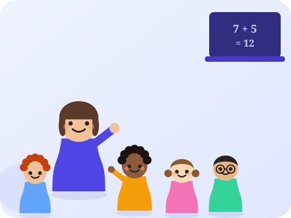

Développer la motricité fine en maternelle
Des activités simples pour préparer la main à l’écriture et gagner en précision.
Ressource pédagogique
Repères et activités pour accompagner les enfants de moyenne et grande section : motricité, logique, langage, premiers nombres et préparation au CP.

Des activités simples pour préparer la main à l’écriture et gagner en précision.
Les tracés de base à travailler avant d’aborder les lettres.
Des jeux pour associer lettres, sons et premiers mots en douceur.
Passer du comptage oral à la manipulation concrète des quantités.
Classer, trier, comparer : les premiers pas du raisonnement logique.
Enrichir le vocabulaire et la construction des phrases au quotidien.
Des repères stables pour rassurer l’enfant et structurer sa journée.
Des outils simples pour construire les premiers repères temporels.
S’habiller seul, ranger, demander de l’aide : des habitudes à encourager.
Une sélection de jeux adaptés pour progresser en s’amusant.
Ce qui change en grande section pour anticiper sereinement le CP.
Des petites expériences simples pour éveiller la curiosité scientifique.
Des jeux courts pour muscler l’attention et la mémorisation.
Les gestes fins qui préparent aussi à l’écriture et au graphisme.
Un point d’étape sur les compétences clés à sécuriser en fin d’année.
Nos ateliers de maths, sciences & informatique accueillent aussi les enfants dès la moyenne section, avec un cours d’essai en début d’année.
